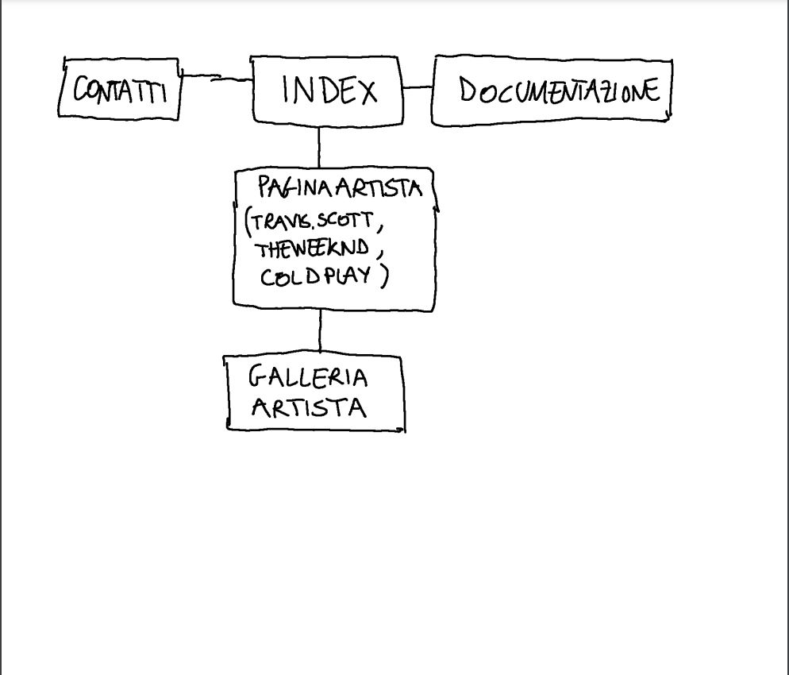
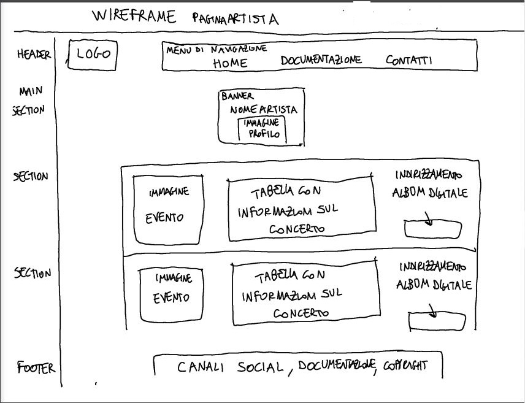
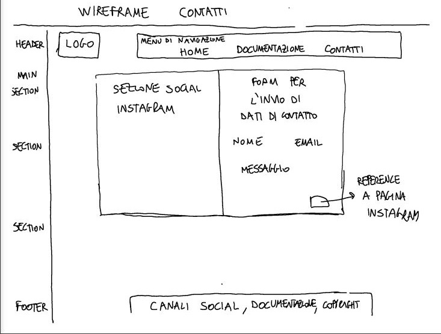
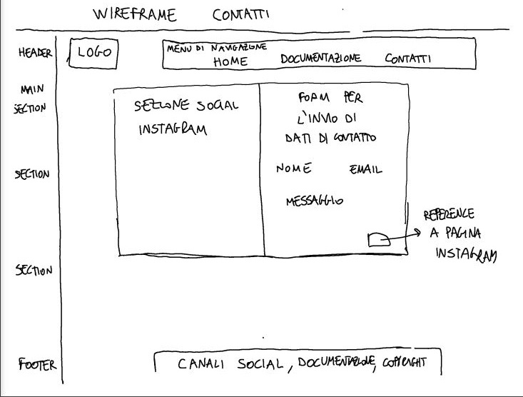

PROJECT MANAGEMENT PLAN
1.BENCHMARKING
Obiettivi:
- Creare una community di appassionati sia di fotografia che di eventi dal vivo: Miriamo a costruire un ambiente interattivo e coinvolgente dove gli amanti della fotografia e della musica possono condividere le loro esperienze, discutere sui loro interessi e creare connessioni. Questo spazio sarà ideale per scambiare consigli, organizzare incontri, e collaborare in progetti fotografici legati alla musica dal vivo.
- Creare un album digitale che faccia rivivere le emozioni dell'evento: Desideriamo offrire agli utenti la possibilità di caricare e visualizzare fotografie di concerti in alta qualità. Questo album digitale non sarà solo una raccolta di immagini, ma un mezzo per rivivere l'energia e le emozioni dei concerti. Ogni foto sarà accompagnata da descrizioni e racconti personali, creando un archivio emotivo e visivo degli eventi.
- Disincentivare la produzione di video ai concerti, promuovendo invece la condivisione di foto su Live Station: Vogliamo incoraggiare gli utenti a concentrarsi sul catturare e condividere momenti significativi attraverso la fotografia piuttosto che attraverso video. Crediamo che le foto siano più efficaci nel catturare l'essenza dei concerti e nel preservare l'atmosfera senza distrarre gli altri spettatori o gli artisti stessi. Su Live Station, gli utenti possono condividere e apprezzare la bellezza della fotografia concertistica, creando così un'esperienza più immersiva e rispettosa per tutti.
Target Utente:
E' rivolto per lo più ad appassionati di fotografia e musica dal vivo, per quanto riguarda il target di età, essendo in parte anche un social è indirizzato principalmente a una fascia d'età compresa tra i 18 - 35 anni
Competitors:
Tra i competitors ho individuato social di condivisione fotografie come Instagram e Facebook, che sicuramente sono più popolari ed efficienti ma non offrono la possibilità di creare uno spazio dedicato all'evento a 360 gradi con foto, playlist, informazioni, luogo del concerto. Un sito simile che ho trovato di fotografie di concerti è concertionline.com, ma che non offre la possibilità a chiunque di inviare le proprie foto
2. STRUTTURA E LAYOUT
Architettura del sito:
Wireframe:

 

3. LOOK AND FEELS
Ho scelto il colore nero per lo sfondo dei menu di navigazione perchè volevo mettere in risalto il contenuto della pagina. Mentre per gli sfondi degli artisti e delle pagine degli album ho usato colori vivaci come il verde e il giallo. Non ho dato molta importanza al menu di navigazione, che ha solo tre link (home, documentazione e contatti) perchè così l'utente deve navigare la pagina per trovare i collegamenti. Credo che sia un buon modo per portare l'attenzione sui contenuti. Per la descrizione e le istruzioni all'uso del sito ho usato l'azzurro, che a contrasto con lo sfondo nero cattura facilmente l'attenzione.
4. LINGUAGGI E STRUMENTI USATI
Strumenti usati:
Template gratuito: templated.co.
W3C School per un supporto all'uso di css
Google Immagini per le copertine degli album e dei biglietti.
Instagram e WhatsApp per la promozione del sito.
COMUNICATION STRATEGY
1. BACKGROUND
Live Station si va a collocare in uno spazio lasciato tra i grandi social nettwork (che non garantiscono uno spazio di condivisione mirato e completamente dedicato ai concerti) e le pagine specifiche di foto dei concerti (che non garantisce la possibilità a chiunque di pubblicare).
Linguaggi usati: HTML, CSS, JAVASCRIPT
2. OBBIETTIVI COMUNICATIVI
Il sito si pone come obbiettivo di creare una comunity e per raggiungere gli utenti iniziali fa affidamento principalmente alla pagina Instagram.Si pone come obbiettivo minimo il raggiiungimento di 50 folloew alla pagina Instagram e 50 visite al sito
3. TARGET AUDIENCE E MESSAGGIO
Il sito è pensato per essere fruibile da tutti, principalmente ad appassionati di musica dal vivo e fotografia. Essendo anche in parte un social il target di età è inevitabilmente spostato verso gli utilizzatori dei tali, perciò il target di età va dai 18 ai 35 anni
4. PROMOZIONE
Il sito è stato promosso attraverso app di messaggistica: Whatsapp, Instagram DM, post Instagram, passaparola
5. VALUTAZIONE DEI RISULTATI
Il sito ha raggiunto l'obbiettivo minimo che si era prefissato di 50 follower alla pagina Instagram associata e 50 visitatori al sito